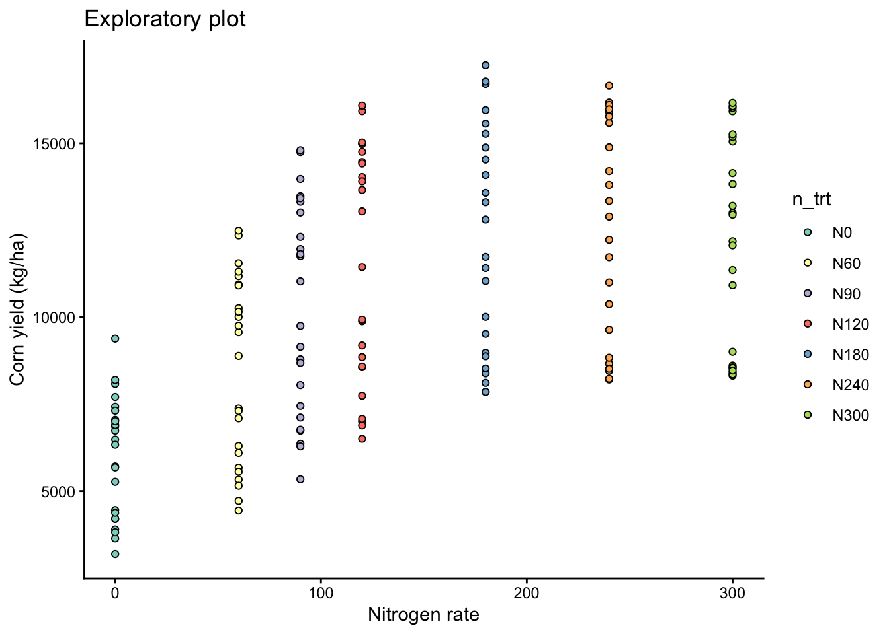
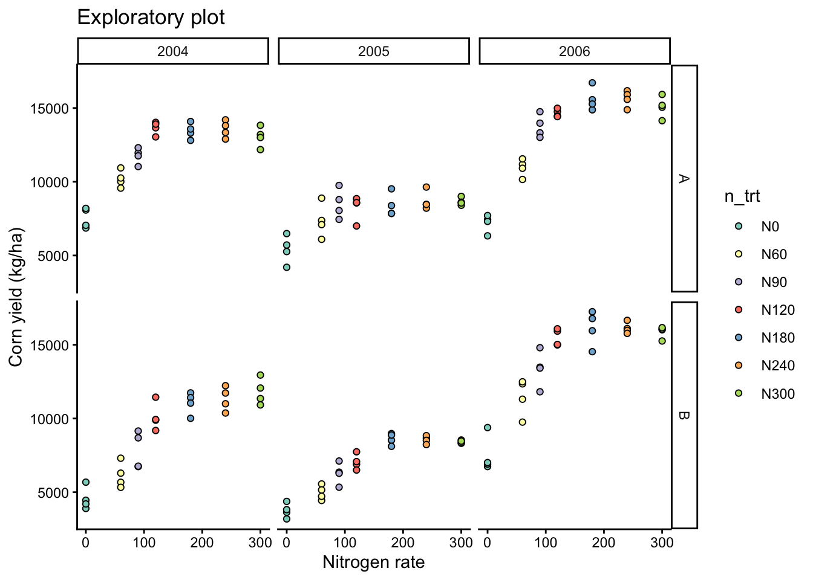
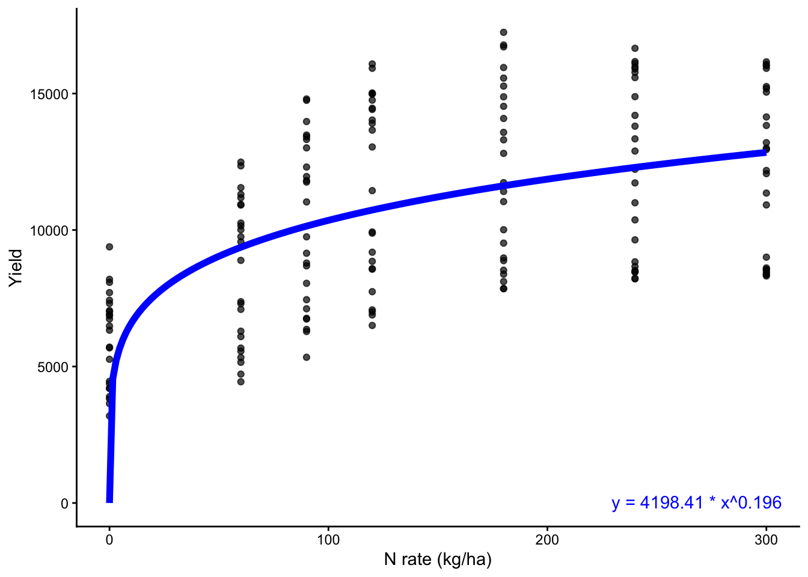
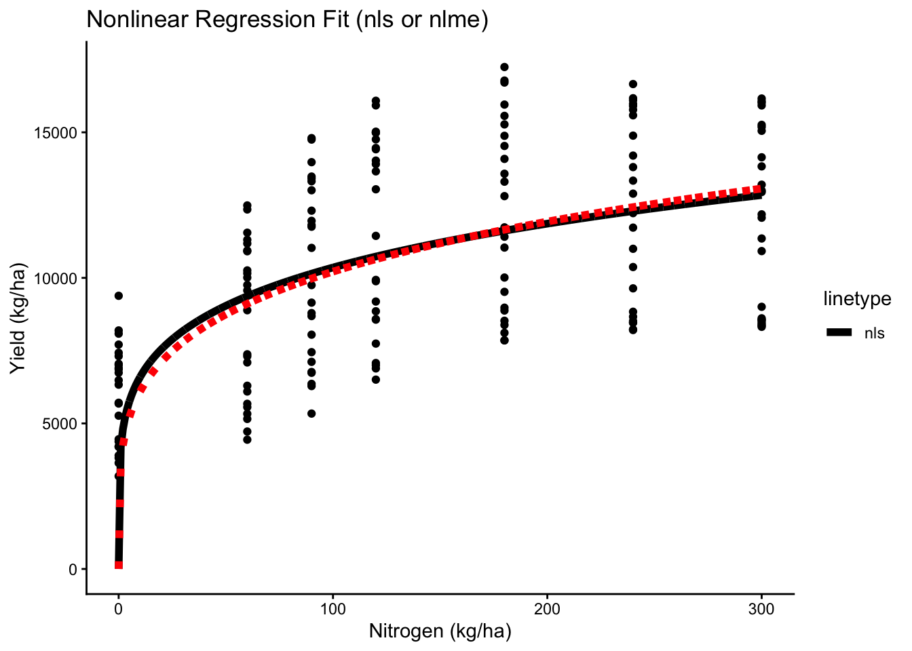
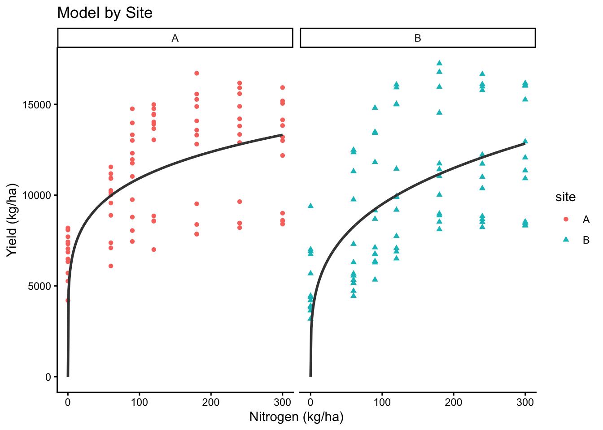
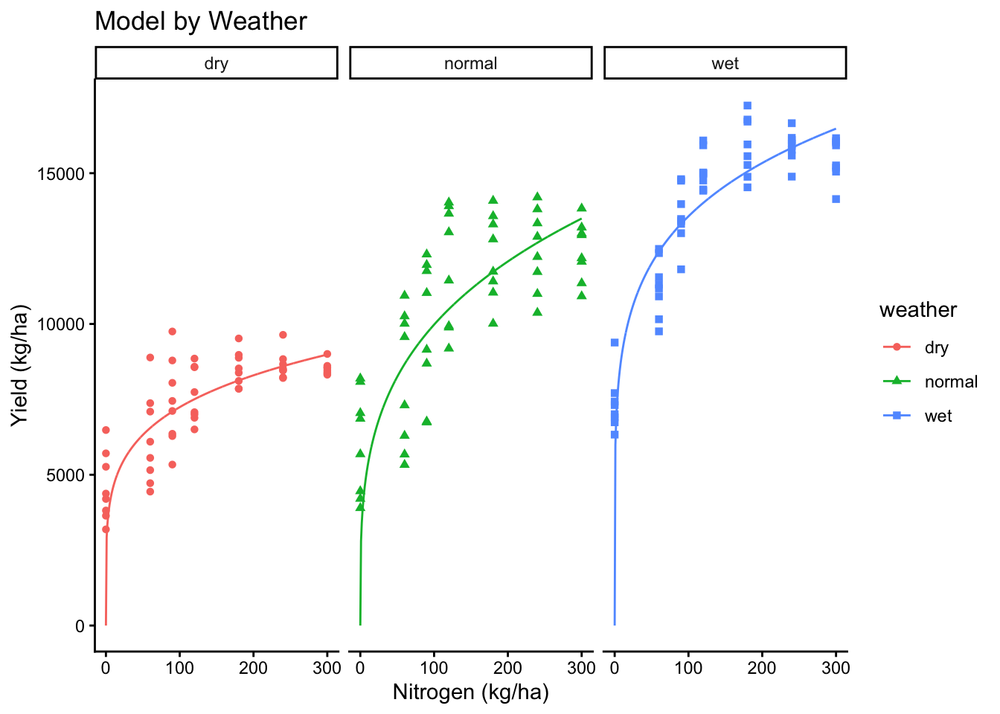
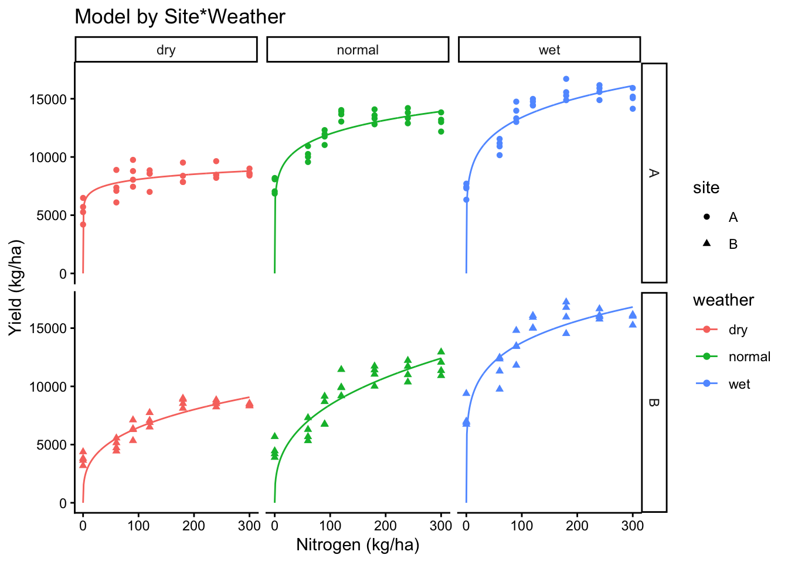
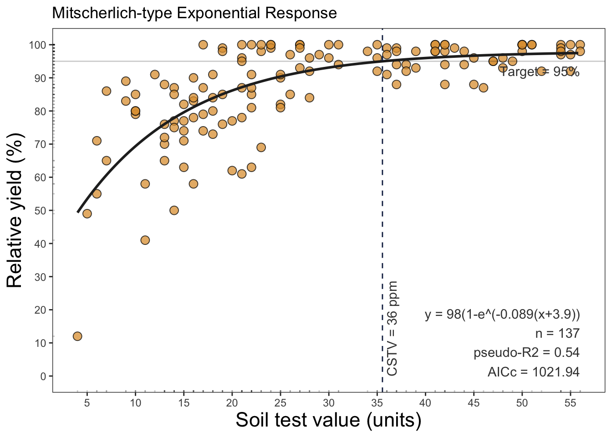
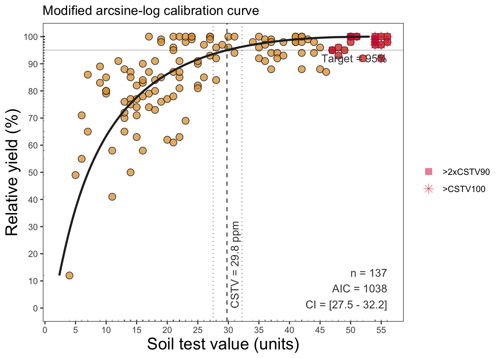
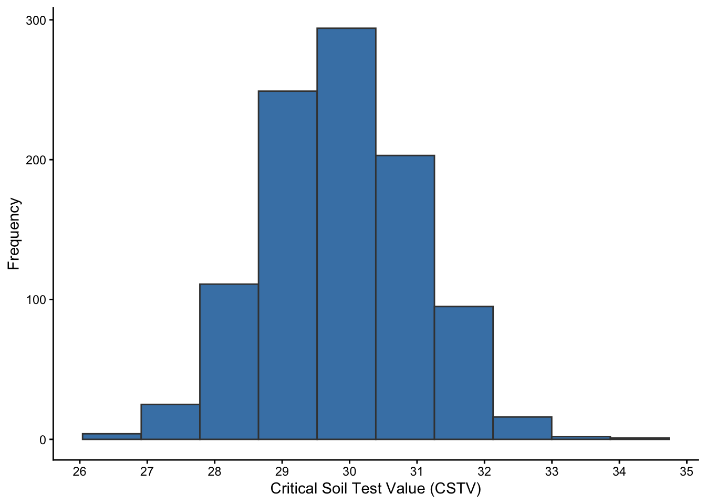

# Load necessary libraries
library(pacman)
p_load(dplyr, tidyr) # data wrangling
p_load(ggplot2) #plots
p_load(agridat) # dataset
p_load(nls, nlme) # non-linear models
p_load(minpack.lm) # convergence help for nl models
p_load(AICcmodavg) # corrected AIC performance
p_load(soiltestcorr) # nl models for soil fertility
ggplot2::theme_set(ggplot2::theme_classic())Non-Linear Regression with R
nonlinear models
R
statistics
agriculture
Summary
This tutorial provides an overview of non-linear regression models in R using agricultural data. We will explore different non-linear models, their applications, and how to implement them with both nls() and nlme() functions.
1 Introduction
Non-linear regression is a statistical technique used to model relationships that cannot be well-represented by a straight line. Unlike linear regression, which assumes a constant rate of change, non-linear models accommodate curves and complex relationships in data.
This tutorial will:
- Introduce the concept of non-linear regression.
- Show how to fit non-linear models in R using
nls()andnlme(). - Try the minpack.lm package for starting values.
- Conduct model selection using AIC and AICc.
- Apply these concepts to the
agridat::lasrosas.corndataset. - See an example of specific package to help with non-linear regression
1.1 Why Non-Linear Regression?
Many real-world relationships are inherently non-linear. Examples include:
- Growth models (e.g., exponential or power functions).
- Yield response to fertilizers.
- Enzyme kinetics in biological systems.
Required packages for today
2 Corn Data
We will again use our synthetic dataset of corn yield response to nitrogen fertilizer across two sites and three years with contrasting weather.
# Read CSV file
cornn_data <- read.csv("data/cornn_data.csv") %>%
mutate(
n_trt = factor(n_trt, levels = c("N0", "N60", "N90", "N120",
"N180", "N240", "N300")),
block = factor(block),
site = factor(site),
year = factor(year),
site_year = interaction(site, weather, drop = FALSE), # create interaction
weather = factor(weather)
) %>%
# IMPORTANT: blocks are nested within site (Block 1 in A is not the same as Block 1 in B)
mutate(
block_in_site = interaction(site, block, drop = TRUE),
yield = yield_kgha
)
glimpse(cornn_data)Rows: 168
Columns: 10
$ site <fct> A, A, A, A, A, A, A, A, A, A, A, A, A, A, A, A, A, A, A,…
$ year <fct> 2004, 2004, 2004, 2004, 2004, 2004, 2004, 2004, 2004, 20…
$ block <fct> 1, 2, 3, 4, 1, 2, 3, 4, 1, 2, 3, 4, 1, 2, 3, 4, 1, 2, 3,…
$ n_trt <fct> N0, N0, N0, N0, N60, N60, N60, N60, N90, N90, N90, N90, …
$ nrate_kgha <int> 0, 0, 0, 0, 60, 60, 60, 60, 90, 90, 90, 90, 120, 120, 12…
$ yield_kgha <int> 6860, 7048, 8083, 8194, 10010, 9568, 10256, 10939, 11959…
$ weather <fct> normal, normal, normal, normal, normal, normal, normal, …
$ site_year <fct> A.normal, A.normal, A.normal, A.normal, A.normal, A.norm…
$ block_in_site <fct> A.1, A.2, A.3, A.4, A.1, A.2, A.3, A.4, A.1, A.2, A.3, A…
$ yield <int> 6860, 7048, 8083, 8194, 10010, 9568, 10256, 10939, 11959…2.1 Visualizing the Data
To determine if a non-linear model is needed, we first visualize the data:
# Plot boxplots faceted by site and year
eda_plot <- cornn_data %>%
ggplot(aes(x = nrate_kgha, y = yield)) +
geom_point(aes(fill = n_trt), shape = 21) +
scale_fill_brewer(palette = "Set3") +
#facet_grid(site ~ year) +
labs(title = "Exploratory plot",
x = "Nitrogen rate",
y = "Corn yield (kg/ha)")
eda_plot
# Add facet by year and site
eda_plot +
facet_grid(site ~ year)
3 Fitting a Non-Linear Model using nls()
We fit an Exponential Growth Model:
\[Y = a X^b\]
where:
- \((Y)\) is the yield.
- \((X)\) is the nitrogen applied.
- \(a\) and \(b\) are parameters to estimate.
# Fit the model with nls
nls_model <- nls(yield ~ a * nrate_kgha^b, data = cornn_data,
start = list(a = 50, b = 0.1))
# Summary of the model
summary(nls_model)
Formula: yield ~ a * nrate_kgha^b
Parameters:
Estimate Std. Error t value Pr(>|t|)
a 4.198e+03 1.095e+03 3.832 0.000180 ***
b 1.960e-01 5.109e-02 3.837 0.000177 ***
---
Signif. codes: 0 '***' 0.001 '**' 0.01 '*' 0.05 '.' 0.1 ' ' 1
Residual standard error: 3712 on 166 degrees of freedom
Number of iterations to convergence: 9
Achieved convergence tolerance: 9.663e-07# grid of x values
pred_df <- tibble(nrate_kgha = seq(min(cornn_data$nrate_kgha, na.rm = TRUE),
max(cornn_data$nrate_kgha, na.rm = TRUE),
length.out = 200)) %>%
# Generate the predictions
mutate(yhat = predict(nls_model, newdata = pick(nrate_kgha)))
coef_nls <- coef(nls_model)
eq_nls <- sprintf("y = %.2f * x^%.3f", coef_nls["a"], coef_nls["b"])
# Plot the data and the fitted curveot
cornn_data %>%
ggplot(aes(x=nrate_kgha, y=yield)) +
geom_point(alpha = 0.7) +
geom_line(data = pred_df, aes(nrate_kgha, yhat), linewidth = 2, color = "blue") +
labs(x = "N rate (kg/ha)", y = "Yield") +
# Add equation
annotate("text", color = "blue",
x = Inf, y = 500, label = eq_nls,
hjust = 1.1, vjust = 1.5)
4 Fitting a Non-Linear Mixed Model using nlme()
The idea here is to be able to account for variability among replicates (rep), so we extend our model to:
# Fit the model with nlme
nlme_model_a <- nlme(yield ~ a * nrate_kgha^b,
data = cornn_data,
fixed = a + b ~ 1,
random = a ~ 1 | site_year/block,
#
start = c(a = coef(nls_model)[[1]], b = coef(nls_model)[[2]]) )
nlme_model_b <- nlme(yield ~ a * nrate_kgha^b,
data = cornn_data,
fixed = a + b ~ 1,
random = b ~ 1 | site_year/block,
start = c(a = coef(nls_model)[[1]], b = coef(nls_model)[[2]]) )
nlme_model_ab <- nlme(yield ~ a * nrate_kgha^b,
data = cornn_data,
fixed = a + b ~ 1,
random = a + b ~ 1 | site_year/block,
start = c(a = 1, b = 0) )
# Summary of the model
summary(nls_model)
Formula: yield ~ a * nrate_kgha^b
Parameters:
Estimate Std. Error t value Pr(>|t|)
a 4.198e+03 1.095e+03 3.832 0.000180 ***
b 1.960e-01 5.109e-02 3.837 0.000177 ***
---
Signif. codes: 0 '***' 0.001 '**' 0.01 '*' 0.05 '.' 0.1 ' ' 1
Residual standard error: 3712 on 166 degrees of freedom
Number of iterations to convergence: 9
Achieved convergence tolerance: 9.663e-07summary(nlme_model_a)Nonlinear mixed-effects model fit by maximum likelihood
Model: yield ~ a * nrate_kgha^b
Data: cornn_data
AIC BIC logLik
3150.238 3165.857 -1570.119
Random effects:
Formula: a ~ 1 | site_year
a
StdDev: 914.7724
Formula: a ~ 1 | block %in% site_year
a Residual
StdDev: 0.05244787 2609.194
Fixed effects: a + b ~ 1
Value Std.Error DF t-value p-value
a 3637.031 714.0683 143 5.093394 0
b 0.224 0.0325 143 6.889454 0
Correlation:
a
b -0.845
Standardized Within-Group Residuals:
Min Q1 Med Q3 Max
-1.0433264 -0.2414256 0.1366508 0.4938138 3.5965129
Number of Observations: 168
Number of Groups:
site_year block %in% site_year
6 24 summary(nlme_model_b)Nonlinear mixed-effects model fit by maximum likelihood
Model: yield ~ a * nrate_kgha^b
Data: cornn_data
AIC BIC logLik
3152.967 3168.587 -1571.483
Random effects:
Formula: b ~ 1 | site_year
b
StdDev: 0.0504555
Formula: b ~ 1 | block %in% site_year
b Residual
StdDev: 2.738928e-06 2631.652
Fixed effects: a + b ~ 1
Value Std.Error DF t-value p-value
a 4681.356 843.3928 143 5.550624 0e+00
b 0.169 0.0410 143 4.114545 1e-04
Correlation:
a
b -0.857
Standardized Within-Group Residuals:
Min Q1 Med Q3 Max
-1.2850886 -0.2176994 0.1098612 0.4882453 3.5658214
Number of Observations: 168
Number of Groups:
site_year block %in% site_year
6 24 summary(nlme_model_ab)Nonlinear mixed-effects model fit by maximum likelihood
Model: yield ~ a * nrate_kgha^b
Data: cornn_data
AIC BIC logLik
3158.239 3186.354 -1570.119
Random effects:
Formula: list(a ~ 1, b ~ 1)
Level: site_year
Structure: General positive-definite, Log-Cholesky parametrization
StdDev Corr
a 9.147940e+02 a
b 7.812124e-07 0.064
Formula: list(a ~ 1, b ~ 1)
Level: block %in% site_year
Structure: General positive-definite, Log-Cholesky parametrization
StdDev Corr
a 2.953223e-01 a
b 7.808670e-09 0
Residual 2.609192e+03
Fixed effects: a + b ~ 1
Value Std.Error DF t-value p-value
a 3636.718 714.0405 143 5.093153 0
b 0.224 0.0325 143 6.889822 0
Correlation:
a
b -0.845
Standardized Within-Group Residuals:
Min Q1 Med Q3 Max
-1.0432720 -0.2413717 0.1366609 0.4938591 3.5965161
Number of Observations: 168
Number of Groups:
site_year block %in% site_year
6 24 AIC(nls_model, nlme_model_a, nlme_model_b, nlme_model_ab) df AIC
nls_model 3 3242.452
nlme_model_a 5 3150.238
nlme_model_b 5 3152.967
nlme_model_ab 9 3158.2394.1 site fixed
nlme_model_site <- nlme(yield ~ a * nrate_kgha^b,
data = cornn_data,
fixed = (a+b) ~ site,
random = (a + b) ~ 1 | site_year/block,
start = c(a_A = 1, b_A = 0.5,
a_B = 0, b_B = 0) )
summary(nlme_model_site)Nonlinear mixed-effects model fit by maximum likelihood
Model: yield ~ a * nrate_kgha^b
Data: cornn_data
AIC BIC logLik
3159.757 3194.121 -1568.879
Random effects:
Formula: list(a ~ 1, b ~ 1)
Level: site_year
Structure: General positive-definite, Log-Cholesky parametrization
StdDev Corr
a.(Intercept) 8.886220e+02 a.(In)
b.(Intercept) 9.303527e-06 0.977
Formula: list(a ~ 1, b ~ 1)
Level: block %in% site_year
Structure: General positive-definite, Log-Cholesky parametrization
StdDev Corr
a.(Intercept) 1.748585e-01 a.(In)
b.(Intercept) 2.200956e-09 0
Residual 2.590379e+03
Fixed effects: (a + b) ~ site
Value Std.Error DF t-value p-value
a.(Intercept) 4772.296 1180.6831 141 4.041979 0.0001
a.siteB -2086.960 1458.3309 141 -1.431061 0.1546
b.(Intercept) 0.180 0.0435 141 4.133696 0.0001
b.siteB 0.094 0.0656 141 1.437717 0.1527
Correlation:
a.(In) a.sitB b.(In)
a.siteB -0.810
b.(Intercept) -0.892 0.722
b.siteB 0.591 -0.826 -0.663
Standardized Within-Group Residuals:
Min Q1 Med Q3 Max
-0.9214612 -0.2414659 0.1105360 0.4430264 3.6226361
Number of Observations: 168
Number of Groups:
site_year block %in% site_year
6 24 coef(nlme_model_site) a.(Intercept) a.siteB b.(Intercept) b.siteB
A.dry/1 3446.459 -2086.96 0.1799112 0.09438465
A.dry/2 3446.459 -2086.96 0.1799112 0.09438465
A.dry/3 3446.459 -2086.96 0.1799112 0.09438465
A.dry/4 3446.459 -2086.96 0.1799112 0.09438465
B.dry/1 3966.558 -2086.96 0.1799165 0.09438465
B.dry/2 3966.558 -2086.96 0.1799165 0.09438465
B.dry/3 3966.558 -2086.96 0.1799165 0.09438465
B.dry/4 3966.558 -2086.96 0.1799165 0.09438465
A.normal/1 5109.522 -2086.96 0.1799282 0.09438465
A.normal/2 5109.522 -2086.96 0.1799282 0.09438465
A.normal/3 5109.522 -2086.96 0.1799282 0.09438465
A.normal/4 5109.522 -2086.96 0.1799282 0.09438465
B.normal/1 4572.980 -2086.96 0.1799227 0.09438465
B.normal/2 4572.980 -2086.96 0.1799227 0.09438465
B.normal/3 4572.980 -2086.96 0.1799227 0.09438465
B.normal/4 4572.980 -2086.96 0.1799227 0.09438465
A.wet/1 5760.908 -2086.96 0.1799349 0.09438465
A.wet/2 5760.908 -2086.96 0.1799349 0.09438465
A.wet/3 5760.908 -2086.96 0.1799349 0.09438465
A.wet/4 5760.908 -2086.96 0.1799349 0.09438465
B.wet/1 5777.351 -2086.96 0.1799350 0.09438465
B.wet/2 5777.351 -2086.96 0.1799350 0.09438465
B.wet/3 5777.351 -2086.96 0.1799350 0.09438465
B.wet/4 5777.351 -2086.96 0.1799350 0.09438465# Some components of broom mixed doesn't work yet for non-linear models
broom.mixed::tidy(nlme_model_site)# A tibble: 4 × 7
effect term estimate std.error df statistic p.value
<chr> <chr> <dbl> <dbl> <dbl> <dbl> <dbl>
1 fixed a.(Intercept) 4772. 1181. 141 4.04 0.0000868
2 fixed a.siteB -2087. 1458. 141 -1.43 0.155
3 fixed b.(Intercept) 0.180 0.0435 141 4.13 0.0000610
4 fixed b.siteB 0.0944 0.0656 141 1.44 0.153 4.2 weather fixed
nlme_model_weather <- nlme(yield ~ a * nrate_kgha^b,
data = cornn_data,
fixed = a + b ~ weather,
random = a + b ~ 1 | site_year/block,
start = c(a_dry = 1, b_dry = 0.5,
a_normal = 0, a_wet = 0,
b_normal = 0, b_wet = 0))
summary(nlme_model_weather)Nonlinear mixed-effects model fit by maximum likelihood
Model: yield ~ a * nrate_kgha^b
Data: cornn_data
AIC BIC logLik
3149.468 3190.08 -1561.734
Random effects:
Formula: list(a ~ 1, b ~ 1)
Level: site_year
Structure: General positive-definite, Log-Cholesky parametrization
StdDev Corr
a.(Intercept) 1.970913e+02 a.(In)
b.(Intercept) 3.686363e-07 -0.007
Formula: list(a ~ 1, b ~ 1)
Level: block %in% site_year
Structure: General positive-definite, Log-Cholesky parametrization
StdDev Corr
a.(Intercept) 1.811216e+00 a.(In)
b.(Intercept) 9.289002e-08 0.005
Residual 2.598038e+03
Fixed effects: a + b ~ weather
Value Std.Error DF t-value p-value
a.(Intercept) 2932.6045 1334.9354 139 2.1968138 0.0297
a.weathernormal -120.0615 1588.3915 139 -0.0755868 0.9399
a.weatherwet 3082.2465 1997.9328 139 1.5427178 0.1252
b.(Intercept) 0.1963 0.0886 139 2.2152824 0.0284
b.weathernormal 0.0787 0.1062 139 0.7407521 0.4601
b.weatherwet -0.0196 0.1009 139 -0.1944432 0.8461
Correlation:
a.(In) a.wthrn a.wthrw b.(In) b.wthrn
a.weathernormal -0.840
a.weatherwet -0.668 0.562
b.(Intercept) -0.989 0.831 0.661
b.weathernormal 0.825 -0.986 -0.551 -0.834
b.weatherwet 0.868 -0.730 -0.932 -0.878 0.733
Standardized Within-Group Residuals:
Min Q1 Med Q3 Max
-1.05273676 -0.22651654 0.09249057 0.53281726 3.61195639
Number of Observations: 168
Number of Groups:
site_year block %in% site_year
6 24 coef(nlme_model_weather) a.(Intercept) a.weathernormal a.weatherwet b.(Intercept)
A.dry/1 3014.991 -120.0615 3082.246 0.1962937
A.dry/2 3014.985 -120.0615 3082.246 0.1962937
A.dry/3 3014.988 -120.0615 3082.246 0.1962937
A.dry/4 3014.987 -120.0615 3082.246 0.1962937
B.dry/1 2850.222 -120.0615 3082.246 0.1962937
B.dry/2 2850.221 -120.0615 3082.246 0.1962937
B.dry/3 2850.220 -120.0615 3082.246 0.1962937
B.dry/4 2850.221 -120.0615 3082.246 0.1962937
A.normal/1 3165.761 -120.0615 3082.246 0.1962937
A.normal/2 3165.758 -120.0615 3082.246 0.1962937
A.normal/3 3165.762 -120.0615 3082.246 0.1962937
A.normal/4 3165.765 -120.0615 3082.246 0.1962937
B.normal/1 2699.450 -120.0615 3082.246 0.1962937
B.normal/2 2699.452 -120.0615 3082.246 0.1962937
B.normal/3 2699.446 -120.0615 3082.246 0.1962937
B.normal/4 2699.441 -120.0615 3082.246 0.1962937
A.wet/1 2888.296 -120.0615 3082.246 0.1962937
A.wet/2 2888.296 -120.0615 3082.246 0.1962937
A.wet/3 2888.293 -120.0615 3082.246 0.1962937
A.wet/4 2888.291 -120.0615 3082.246 0.1962937
B.wet/1 2976.920 -120.0615 3082.246 0.1962937
B.wet/2 2976.914 -120.0615 3082.246 0.1962937
B.wet/3 2976.914 -120.0615 3082.246 0.1962937
B.wet/4 2976.912 -120.0615 3082.246 0.1962937
b.weathernormal b.weatherwet
A.dry/1 0.07867022 -0.01962042
A.dry/2 0.07867022 -0.01962042
A.dry/3 0.07867022 -0.01962042
A.dry/4 0.07867022 -0.01962042
B.dry/1 0.07867022 -0.01962042
B.dry/2 0.07867022 -0.01962042
B.dry/3 0.07867022 -0.01962042
B.dry/4 0.07867022 -0.01962042
A.normal/1 0.07867022 -0.01962042
A.normal/2 0.07867022 -0.01962042
A.normal/3 0.07867022 -0.01962042
A.normal/4 0.07867022 -0.01962042
B.normal/1 0.07867022 -0.01962042
B.normal/2 0.07867022 -0.01962042
B.normal/3 0.07867022 -0.01962042
B.normal/4 0.07867022 -0.01962042
A.wet/1 0.07867022 -0.01962042
A.wet/2 0.07867022 -0.01962042
A.wet/3 0.07867022 -0.01962042
A.wet/4 0.07867022 -0.01962042
B.wet/1 0.07867022 -0.01962042
B.wet/2 0.07867022 -0.01962042
B.wet/3 0.07867022 -0.01962042
B.wet/4 0.07867022 -0.01962042# Some components of broom mixed doesn't work yet for non-linear models
broom.mixed::tidy(nlme_model_weather)# A tibble: 6 × 7
effect term estimate std.error df statistic p.value
<chr> <chr> <dbl> <dbl> <dbl> <dbl> <dbl>
1 fixed a.(Intercept) 2933. 1335. 139 2.20 0.0297
2 fixed a.weathernormal -120. 1588. 139 -0.0756 0.940
3 fixed a.weatherwet 3082. 1998. 139 1.54 0.125
4 fixed b.(Intercept) 0.196 0.0886 139 2.22 0.0284
5 fixed b.weathernormal 0.0787 0.106 139 0.741 0.460
6 fixed b.weatherwet -0.0196 0.101 139 -0.194 0.846 4.3 site + weather
nlme_model_s_w <- nlme(yield ~ a * nrate_kgha^b,
data = cornn_data,
fixed = a + b ~ site + weather,
random = a + b ~ 1 | site_year/block,
start = c(a_A = 1, b_A = 0.5,
a_B = 0, b_B = 0,
a_normal = 0, b_normal = 0,
a_wet = 0, b_wet = 0) )
summary(nlme_model_s_w)
coef(nlme_model_s_w)
broom.mixed::tidy(nlme_model_s_w)4.4 minpack.lm
# Fit using nlsLM() instead of nls()
nls_minpack <- minpack.lm::nlsLM(yield ~ a * nrate_kgha^b,
data = cornn_data,
start = list(a = 10, b = 0.8))
# Extract better initial estimates
coef(nls_fit)
nlme_model_topoyear <- nlme(yield ~ a * nrate_kgha^b,
data = cornn_data,
fixed = a + b ~ site + year,
random = a + b ~ 1 | site_year/block,
start = c(a_A = nls_minpack[["a"]], b_A = nls_minpack[["b"]],
a_B = 0, b_B = 0,
a_normal = 0, b_normal = 0,
a_wet = 0, b_wet = 0))4.5 site*weather
nlme_model_interaction <- nlme(yield ~ a * nrate_kgha^b,
data = cornn_data,
fixed = a + b ~ site * weather,
random = a + b ~ 1 | site_year/block,
start = c(a_A_dry = 1, b_A_dry = 0.5,
a_B = 0, b_B = 0,
a_normal = 0, b_normal = 0,
a_wet = 0, b_wet = 0,
a_B_normal = 0, b_B_normal = 0,
a_B_wet = 0, b_B_wet = 0) )
summary(nlme_model_interaction)Nonlinear mixed-effects model fit by maximum likelihood
Model: yield ~ a * nrate_kgha^b
Data: cornn_data
AIC BIC logLik
3145.422 3204.778 -1553.711
Random effects:
Formula: list(a ~ 1, b ~ 1)
Level: site_year
Structure: General positive-definite, Log-Cholesky parametrization
StdDev Corr
a.(Intercept) 2.588171e+00 a.(In)
b.(Intercept) 1.334346e-07 0.02
Formula: list(a ~ 1, b ~ 1)
Level: block %in% site_year
Structure: General positive-definite, Log-Cholesky parametrization
StdDev Corr
a.(Intercept) 3.293482e+00 a.(In)
b.(Intercept) 1.788947e-07 0.012
Residual 2.513237e+03
Fixed effects: a + b ~ site * weather
Value Std.Error DF t-value p-value
a.(Intercept) 5673.352 3310.070 133 1.7139671 0.0889
a.siteB -4103.216 3492.938 133 -1.1747178 0.2422
a.weathernormal 755.086 4154.351 133 0.1817580 0.8560
a.weatherwet 510.023 3948.367 133 0.1291732 0.8974
a.siteB:weathernormal -671.420 4394.399 133 -0.1527899 0.8788
a.siteB:weatherwet 3843.941 4566.973 133 0.8416826 0.4015
b.(Intercept) 0.077 0.116 133 0.6629776 0.5085
b.siteB 0.231 0.180 133 1.2836127 0.2015
b.weathernormal 0.059 0.139 133 0.4210020 0.6744
b.weatherwet 0.091 0.134 133 0.6777763 0.4991
b.siteB:weathernormal -0.013 0.222 133 -0.0572440 0.9544
b.siteB:weatherwet -0.216 0.203 133 -1.0605460 0.2908
Correlation:
a.(In) a.sitB a.wthrn a.wthrw a.stB:wthrn a.stB:wthrw
a.siteB -0.948
a.weathernormal -0.797 0.755
a.weatherwet -0.838 0.794 0.668
a.siteB:weathernormal 0.753 -0.795 -0.945 -0.631
a.siteB:weatherwet 0.725 -0.765 -0.577 -0.865 0.608
b.(Intercept) -0.994 0.942 0.792 0.833 -0.749 -0.720
b.siteB 0.640 -0.850 -0.510 -0.537 0.676 0.650
b.weathernormal 0.828 -0.784 -0.992 -0.694 0.938 0.600
b.weatherwet 0.856 -0.811 -0.682 -0.993 0.645 0.859
b.siteB:weathernormal -0.519 0.689 0.622 0.435 -0.841 -0.527
b.siteB:weatherwet -0.566 0.751 0.451 0.657 -0.597 -0.874
b.(In) b.sitB b.wthrn b.wthrw b.stB:wthrn
a.siteB
a.weathernormal
a.weatherwet
a.siteB:weathernormal
a.siteB:weatherwet
b.(Intercept)
b.siteB -0.644
b.weathernormal -0.833 0.537
b.weatherwet -0.861 0.555 0.717
b.siteB:weathernormal 0.522 -0.810 -0.627 -0.450
b.siteB:weatherwet 0.569 -0.883 -0.474 -0.661 0.716
Standardized Within-Group Residuals:
Min Q1 Med Q3 Max
-1.10286777 -0.23871083 0.08033386 0.42842013 3.73382979
Number of Observations: 168
Number of Groups:
site_year block %in% site_year
6 24 coef(nlme_model_interaction) a.(Intercept) a.siteB a.weathernormal a.weatherwet
A.dry/1 5673.358 -4103.216 755.0865 510.0233
A.dry/2 5673.347 -4103.216 755.0865 510.0233
A.dry/3 5673.352 -4103.216 755.0865 510.0233
A.dry/4 5673.350 -4103.216 755.0865 510.0233
B.dry/1 5673.358 -4103.216 755.0865 510.0233
B.dry/2 5673.352 -4103.216 755.0865 510.0233
B.dry/3 5673.345 -4103.216 755.0865 510.0233
B.dry/4 5673.352 -4103.216 755.0865 510.0233
A.normal/1 5673.352 -4103.216 755.0865 510.0233
A.normal/2 5673.345 -4103.216 755.0865 510.0233
A.normal/3 5673.352 -4103.216 755.0865 510.0233
A.normal/4 5673.358 -4103.216 755.0865 510.0233
B.normal/1 5673.371 -4103.216 755.0865 510.0233
B.normal/2 5673.374 -4103.216 755.0865 510.0233
B.normal/3 5673.342 -4103.216 755.0865 510.0233
B.normal/4 5673.320 -4103.216 755.0865 510.0233
A.wet/1 5673.361 -4103.216 755.0865 510.0233
A.wet/2 5673.358 -4103.216 755.0865 510.0233
A.wet/3 5673.348 -4103.216 755.0865 510.0233
A.wet/4 5673.341 -4103.216 755.0865 510.0233
B.wet/1 5673.372 -4103.216 755.0865 510.0233
B.wet/2 5673.347 -4103.216 755.0865 510.0233
B.wet/3 5673.347 -4103.216 755.0865 510.0233
B.wet/4 5673.341 -4103.216 755.0865 510.0233
a.siteB:weathernormal a.siteB:weatherwet b.(Intercept) b.siteB
A.dry/1 -671.4197 3843.941 0.07678357 0.2307287
A.dry/2 -671.4197 3843.941 0.07678357 0.2307287
A.dry/3 -671.4197 3843.941 0.07678357 0.2307287
A.dry/4 -671.4197 3843.941 0.07678357 0.2307287
B.dry/1 -671.4197 3843.941 0.07678357 0.2307287
B.dry/2 -671.4197 3843.941 0.07678357 0.2307287
B.dry/3 -671.4197 3843.941 0.07678357 0.2307287
B.dry/4 -671.4197 3843.941 0.07678357 0.2307287
A.normal/1 -671.4197 3843.941 0.07678357 0.2307287
A.normal/2 -671.4197 3843.941 0.07678357 0.2307287
A.normal/3 -671.4197 3843.941 0.07678357 0.2307287
A.normal/4 -671.4197 3843.941 0.07678357 0.2307287
B.normal/1 -671.4197 3843.941 0.07678357 0.2307287
B.normal/2 -671.4197 3843.941 0.07678357 0.2307287
B.normal/3 -671.4197 3843.941 0.07678357 0.2307287
B.normal/4 -671.4197 3843.941 0.07678357 0.2307287
A.wet/1 -671.4197 3843.941 0.07678357 0.2307287
A.wet/2 -671.4197 3843.941 0.07678357 0.2307287
A.wet/3 -671.4197 3843.941 0.07678357 0.2307287
A.wet/4 -671.4197 3843.941 0.07678357 0.2307287
B.wet/1 -671.4197 3843.941 0.07678357 0.2307287
B.wet/2 -671.4197 3843.941 0.07678357 0.2307287
B.wet/3 -671.4197 3843.941 0.07678357 0.2307287
B.wet/4 -671.4197 3843.941 0.07678357 0.2307287
b.weathernormal b.weatherwet b.siteB:weathernormal
A.dry/1 0.05854963 0.09115696 -0.01269743
A.dry/2 0.05854963 0.09115696 -0.01269743
A.dry/3 0.05854963 0.09115696 -0.01269743
A.dry/4 0.05854963 0.09115696 -0.01269743
B.dry/1 0.05854963 0.09115696 -0.01269743
B.dry/2 0.05854963 0.09115696 -0.01269743
B.dry/3 0.05854963 0.09115696 -0.01269743
B.dry/4 0.05854963 0.09115696 -0.01269743
A.normal/1 0.05854963 0.09115696 -0.01269743
A.normal/2 0.05854963 0.09115696 -0.01269743
A.normal/3 0.05854963 0.09115696 -0.01269743
A.normal/4 0.05854963 0.09115696 -0.01269743
B.normal/1 0.05854963 0.09115696 -0.01269743
B.normal/2 0.05854963 0.09115696 -0.01269743
B.normal/3 0.05854963 0.09115696 -0.01269743
B.normal/4 0.05854963 0.09115696 -0.01269743
A.wet/1 0.05854963 0.09115696 -0.01269743
A.wet/2 0.05854963 0.09115696 -0.01269743
A.wet/3 0.05854963 0.09115696 -0.01269743
A.wet/4 0.05854963 0.09115696 -0.01269743
B.wet/1 0.05854963 0.09115696 -0.01269743
B.wet/2 0.05854963 0.09115696 -0.01269743
B.wet/3 0.05854963 0.09115696 -0.01269743
B.wet/4 0.05854963 0.09115696 -0.01269743
b.siteB:weatherwet
A.dry/1 -0.2157731
A.dry/2 -0.2157731
A.dry/3 -0.2157731
A.dry/4 -0.2157731
B.dry/1 -0.2157731
B.dry/2 -0.2157731
B.dry/3 -0.2157731
B.dry/4 -0.2157731
A.normal/1 -0.2157731
A.normal/2 -0.2157731
A.normal/3 -0.2157731
A.normal/4 -0.2157731
B.normal/1 -0.2157731
B.normal/2 -0.2157731
B.normal/3 -0.2157731
B.normal/4 -0.2157731
A.wet/1 -0.2157731
A.wet/2 -0.2157731
A.wet/3 -0.2157731
A.wet/4 -0.2157731
B.wet/1 -0.2157731
B.wet/2 -0.2157731
B.wet/3 -0.2157731
B.wet/4 -0.2157731df_int <- broom.mixed::tidy(nlme_model_interaction)
df_int# A tibble: 12 × 7
effect term estimate std.error df statistic p.value
<chr> <chr> <dbl> <dbl> <dbl> <dbl> <dbl>
1 fixed a.(Intercept) 5673. 3310. 133 1.71 0.0889
2 fixed a.siteB -4103. 3493. 133 -1.17 0.242
3 fixed a.weathernormal 755. 4154. 133 0.182 0.856
4 fixed a.weatherwet 510. 3948. 133 0.129 0.897
5 fixed a.siteB:weathernormal -671. 4394. 133 -0.153 0.879
6 fixed a.siteB:weatherwet 3844. 4567. 133 0.842 0.401
7 fixed b.(Intercept) 0.0768 0.116 133 0.663 0.508
8 fixed b.siteB 0.231 0.180 133 1.28 0.202
9 fixed b.weathernormal 0.0585 0.139 133 0.421 0.674
10 fixed b.weatherwet 0.0912 0.134 133 0.678 0.499
11 fixed b.siteB:weathernormal -0.0127 0.222 133 -0.0572 0.954
12 fixed b.siteB:weatherwet -0.216 0.203 133 -1.06 0.291 5 Model selection
5.1 AIC:
We can use the Akaike Information Criterion (AIC).
# Get
AIC(nlme_model_ab, nlme_model_site, nlme_model_weather, nlme_model_interaction) df AIC
nlme_model_ab 9 3158.239
nlme_model_site 11 3159.757
nlme_model_weather 13 3149.468
nlme_model_interaction 19 3145.4225.2 AICc:
When comparing different nonlinear models, it is essential to use an objective model selection criterion. One of the most commonly used criteria is the Akaike Information Criterion (AIC) and its corrected version AICc.
Why Use AICc Instead of AIC?
AIC is widely used for model comparison, but it has a known bias when applied to small sample sizes or when the number of parameters (K) is large relative to the sample size (n). AICc corrects for this bias by adding a small-sample penalty:
\[ AICc = AIC + \frac{2K(K+1)}{n-K-1} \]
Where:
AIC is the standard Akaike Information Criterion: \(\(AIC = -2 \log L + 2K\)\)
K is the number of estimated parameters
n is the sample size
Thus, when n is large, AICc ≈ AIC, but for small datasets, AICc penalizes overfitting more effectively.
5.3 Delta AICc and AICc Weights
To compare models, we use Delta AICc (ΔAICc) and AICc weights:
- ΔAICc: The difference between each model’s AICc and the lowest AICc value.
- A model with ΔAICc = 0 is the best model.
- Models with ΔAICc < 2 have substantial support.
- ΔAICc > 10 means the model has little support.
- AICc weight (wAICc): Measures the relative likelihood of each model given the data.
- A higher weight means the model is more likely to be the best model.
- The weights sum to 1, allowing for direct comparison of model likelihoods.
5.4 Using AICcmodavg in R
# Run them separatedly
AICcmodavg::AICc(nlme_model_ab)[1] 3159.378AICcmodavg::AICc(nlme_model_site)[1] 3161.449AICcmodavg::AICc(nlme_model_weather)[1] 3151.832AICcmodavg::AICc(nlme_model_interaction)[1] 3150.557The AICcmodavg package provides functions for model selection: ### Compare Models Using aictab()
# Create a list of candidate models
model_list <- list(simple = nlme_model_ab,
site = nlme_model_site,
weather = nlme_model_weather,
interaction = nlme_model_interaction)
# Model selection table
model_selection <- AICcmodavg::aictab(cand.set = model_list, modnames = names(model_list))
model_selection
Model selection based on AICc:
K AICc Delta_AICc AICcWt Cum.Wt LL
interaction 19 3150.56 0.00 0.65 0.65 -1553.71
weather 13 3151.83 1.27 0.34 0.99 -1561.73
simple 9 3159.38 8.82 0.01 1.00 -1570.12
site 11 3161.45 10.89 0.00 1.00 -1568.88This will output a table with:
- AICc values for each model
- ΔAICc (relative difference)
- AICc weights (relative model support)
5.5 Conclusion
- AICc is preferred over AIC when sample sizes are small.
- ΔAICc helps identify the best model and evaluate model differences.
- AICc weights allow comparison of model likelihoods.
- The
AICcmodavgpackage makes it easy to apply AICc-based model selection in R.
By using AICc, we can objectively choose the best model while avoiding overfitting. 🚀
6 Visualization
The estimated parameters \(a\) and \(b\) tell us how yield responds to nitrogen application. We can visualize the fitted models:
# Create a new data frame for predictions
# the function "expand.grid" is a great alternative to cross factor levels
new_df <- expand.grid(nrate_kgha = seq(min(cornn_data$nrate_kgha), max(cornn_data$nrate_kgha), by=1),
rep = unique(cornn_data$block),
site = unique(cornn_data$site),
weather = unique(cornn_data$weather))
# Predictions for each model
new_preds <- new_df %>%
mutate(yield_nls = predict(nls_model, newdata = new_df, level = 0),
yield_nlme = predict(nlme_model_ab, newdata = new_df, level = 0),
yield_nlme_site = predict(nlme_model_site, newdata = new_df, level = 0),
yield_nlme_weather = predict(nlme_model_weather, newdata = new_df, level = 0),
yield_nlme_interaction = predict(nlme_model_interaction, newdata = new_df, level = 0) )
# Global
ggplot(cornn_data, aes(x = nrate_kgha, y = yield)) +
geom_point() +
geom_line(data = new_preds, aes(x = nrate_kgha, y = yield_nls, linetype = "nls"),
color = "black", linewidth = 2) +
geom_line(data = new_preds, aes(x = nrate_kgha, y = yield_nlme, linetype = "nlme"),
color = "red", linewidth = 2, linetype = "dotted") +
labs(title = "Nonlinear Regression Fit (nls or nlme)",
x = "Nitrogen (kg/ha)", y = "Yield (kg/ha)") 
# Site
ggplot(cornn_data, aes(x = nrate_kgha, y = yield, color = site, shape = site)) +
geom_point() +
geom_line(data = new_preds, aes(x = nrate_kgha, y = yield_nlme_site),
color = "grey25", linewidth=1) +
labs(title = "Model by Site", x = "Nitrogen (kg/ha)", y = "Yield (kg/ha)")+
facet_wrap(~site)
# Weather
ggplot(cornn_data, aes(x = nrate_kgha, y = yield, color = weather, shape = weather)) +
geom_point() +
geom_line(data = new_preds, aes(x = nrate_kgha, y = yield_nlme_weather)) +
labs(title = "Model by Weather", x = "Nitrogen (kg/ha)", y = "Yield (kg/ha)")+
facet_wrap(~weather)
# Interaction
ggplot(cornn_data, aes(x = nrate_kgha, y = yield, color = weather, shape = site)) +
geom_point() +
geom_line(data = new_preds, aes(x = nrate_kgha, y = yield_nlme_interaction)) +
labs(title = "Model by Site*Weather", x = "Nitrogen (kg/ha)", y = "Yield (kg/ha)")+
facet_grid(site~weather) 
7 Other alternatives
Some packages try to help with the fitting of models that are used for specific field. For example, the soiltestcorr package is designed to help with the regression model fitting for relationships between relative yield and soil test values. ## soiltestcorr
# Example dataset
soilfert_data <- soiltestcorr::data_test
# Mitscherlich
soiltestcorr::mitscherlich(data = soilfert_data, stv = STV, ry = RY, plot = F)# A tibble: 1 × 13
asymptote b curvature equation y_intercept target CSTV AIC AICc BIC
<dbl> <dbl> <dbl> <chr> <dbl> <dbl> <dbl> <dbl> <dbl> <dbl>
1 98.0 3.91 0.0885 98(1-e^(… 28.6 95 35.5 1022. 1022. 1033.
# ℹ 3 more variables: R2 <dbl>, RMSE <dbl>, pvalue <dbl>soiltestcorr::mitscherlich(data = soilfert_data, stv = STV, ry = RY, plot = TRUE)
# Modified Arcsine-log Calibration Curve
soiltestcorr::mod_alcc(data = soilfert_data, stv = STV, ry = RY, target = 95, plot = F)# A tibble: 1 × 18
n r RMSE_alcc AIC_alcc AIC_sma BIC_sma p_value confidence target
<int> <dbl> <dbl> <dbl> <dbl> <dbl> <dbl> <dbl> <dbl>
1 137 0.716 10.5 1038. -1.04 13.6 7.31e-23 0.95 95
# ℹ 9 more variables: CSTV <dbl>, LL <dbl>, UL <dbl>, CSTV90 <dbl>,
# n.90x2 <int>, CSTV100 <dbl>, n.100 <int>, Curve <list>, SMA <list>soiltestcorr::mod_alcc(data = soilfert_data, stv = STV, ry = RY, target = 95, plot = TRUE)
7.0.1 Shinyapp
7.0.2 Bootstrapping
Bootstrapping is a technique introduced in late 1970’s by Bradley Efron (Efron, 1979). It is a general purpose inferential approach that is useful for robust estimations, especially when the distribution of a statistic of quantity of interest is complicated or unknown (Faraway, 2014). It provides an alternative to perform confidence statements while relaxing the famous assumption of normality (Efron and Tibshirani, 1993). The underlying concept of bootstrapping is that the inference about a population parameter (e.g. a coefficient) or quantity can be modeled by “resampling” the available data.
The soiltestcorr package has the option to automatically run bootstrapping for the above mentioned non-linear regression models. More info here
boot_models <- soiltestcorr::boot_mod_alcc(n=1000, data = soilfert_data, stv = STV, ry = RY, target = 95)
# Plot
boot_models %>%
ggplot2::ggplot(aes(x = CSTV))+
geom_histogram(color = "grey25", fill = "steelblue", bins = 10)+
labs(x = "Critical Soil Test Value (CSTV)", y = "Frequency") +
scale_x_continuous(breaks = seq(25, 35, by = 1)) 
8 Conclusion
Non-linear regression allows for flexible modeling of relationships in agricultural data. The nls() function in R provides a simple way to estimate non-linear models, while nlme() extends this by incorporating random effects for better inference. Yet, these alternatives present challenges to achieve convergence of the models due to the lack of good starting values, or simply because the model doesn’t fit the data very well. There are some packages that help with specific non-linear regression models. Always keep in mind that understanding the meaning of the coeffients of the models you are trying to fit will tremendously help.